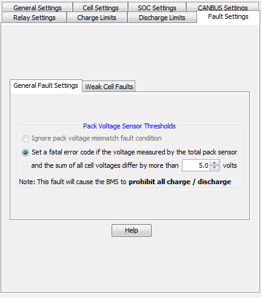

This screen contains a collection of settings related to the sensitivity of the various fault code thresholds in the BMS.
The BMS can be configured to set a critical fault code if it detects a large enough difference between the measured pack voltage (via the total pack voltage sensor) and the sum of all the monitored cell voltages (referred to as the summed pack voltage).
The fault code that is set for this condition is considered a critical fault code and will turn off the charger safety, charge enable and discharge enable outputs on the BMS (the DCL and CCL will also reduce to 0A).
The BMS is aware of the nominal (normal) Internal Resistance of the battery pack based on the data entered into the Nominal Cell Resistance table. This value is used to determine the maximum allowable internal resistance for a cell before it is determined to be weak or faulty. In general, this value can be kept at 200% unless finer control is necessary.
The BMS will also set a weak cell fault code if the difference between the open (sitting) cell voltage of any one cell and the average of the rest of the cells is too great. This typically indicates that the cell is either severely out of balance or has greatly diminished capacity.
A weak pack fault indicates when the pack health drops below a programmed value.
| < Battery Profile Descriptions | Nominal Cell Resistance > |